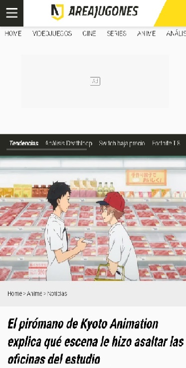

Un hombre de mediana edad, atacó las oficinas de unos de los estudios de anime más conocidos, acabando con la vida de más de una treintena de trabajadores del estudio. El suceso se debe al robo de uno de los trabajos de Shinji Aoba, y las causa del desate de su ira, es una de las escenas de esa misma obra.
 El pirómano de Kyoto Animation artículo 1